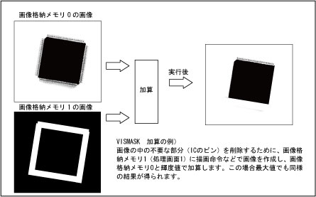

VISMASK
（ステートメント）

画像間演算をします。

VISMASK <ウィンドウ番号>，<X座標>，<Y座標>，<画面1>，<画面2>，<モード>［，<2値下限>［，<2値上限>］］

<ウィンドウ番号>
ウィンドウの番号を指定します。（0～511）
<X座標>
X座標を指定します。（0～511）
<Y座標>
Y座標を指定します。（0～479）
<画面1>
演算する格納メモリ番号を指定します。（0～3）
<画面2>
演算する格納メモリ番号を指定します。処理結果の格納先になります。（0～3）
<モード>
画像間演算の種類を指定します。（0～10）
0：2値AND
1：2値OR
2：2値XOR
3：AND（輝度値を2進数化し各ビットごとにAND）
4：OR（輝度値を2進数化し各ビットごとにOR）
5：XOR（輝度値を2進数化し各ビットごとにXOR）
6：加算（輝度値が255以上の場合255に固定）
7：減算（輝度値が0以下の場合0に固定）
8：最大値（輝度値の大きい方を選択）
9：最小値（輝度値の小さい方を選択）
10：絶対値（輝度値の差の絶対値）


-
処理画面と格納画面が同じ番号の場合エラーになります。
-
処理範囲をウィンドウで指定します。
-
指定したウィンドウの位置が画面をはみ出す場合、実行結果はエラーになります。
-
指定できるウィンドウの形状は矩形の角度0°のみです。その他のウィンドウの場合、エラーになります。
-
2値化の演算では、画面1も2値化処理されます。
-
本命令はロボットコントローラではμVisionボード（オプション）が必要です。


|
VISSCREEN 0,0,1
|
'格納メモリ0番に即時描画します。
|
|
WINDMAKE R,1,512,480,0,2
|
'ウィンドウ1番を矩形ウィンドウに設定します。
|
|
CAMIN 1
|
'カメラ映像を格納メモリに取得します。
|
|
VISCOPY 0,1
|
'格納メモリ0番を1番にコピーします。
|
|
VISBRIGHT 255
|
'描画輝度を255に設定します。
|
|
VISRECT 100,100,100,100,1
|
'画面に塗りつぶした矩形を描画します。
|
|
VISPLNOUT 1
|
'格納メモリ1番をモニタに表示します。
|
|
VISMASK 1,0,0,0,1,10
|
'2画面間の差の絶対値を演算します。
|
|
WINDDISP 1
|
'ウィンドウを描画します。
|